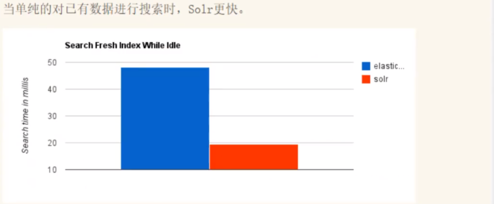

01 - ElasticSearch 前世今生来源网址： https://www.kuangstudy.com/bbs/1354069127022583809作者： syra- |
01 - ElasticSearch 前世今生
在学习ElasticSearch之前，先简单了解一下Lucene：
- Doug Cutting开发
- 是apache软件基金会4 jakarta项目组的一个子项目
- 是一个开放源代码的全文检索引擎工具包
- 当前以及最近几年最受欢迎的免费Java信息检索程序库。
Lucene和ElasticSearch的关系：
- ElasticSearch是基于Lucene 做了一下封装和增强
一、ElasticSearch 概述
Elaticsearch，简称为es，es是一个开源的高扩展的分布式全文检索引擎，它可以近乎实时的存储、检索数据;本身扩展性很好，可以扩展到上百台服务器，处理PB级别(大数据时代）的数据。es也使用java开发并使用Lucene作为其核心来实现所有索引和搜索的功能，但是它的目的是通过简单的RESTful API来隐藏Lucene的复杂性，从而让全文搜索变得简单。
据国际权威的数据库产品评测机构DB Engines的统计，在2016年1月，ElasticSearch已超过Solr等，成为排名第一的搜索引擎类应用。
历史
多年前，一个叫做Shay Banon的刚结婚不久的失业开发者，由于妻子要去伦敦学习厨师，他便跟着也去了。在他找工作的过程中，为了给妻子构建一个食谱的搜索引擎，他开始构建一个早期版本的Lucene。
直接基于Lucene工作会比较困难，所以Shay开始抽象Lucene代码以便lava程序员可以在应用中添加搜索功能。他发布了他的第一个开源项目，叫做“Compass”。
后来Shay找到一份工作，这份工作处在高性能和内存数据网格的分布式环境中，因此高性能的、实时的、分布式的搜索引擎也是理所当然需要的。然后他决定重写Compass库使其成为一个独立的服务叫做Elasticsearch。
第一个公开版本出现在2010年2月，在那之后Elasticsearch已经成为Github上最受欢迎的项目之一，代码贡献者超过300人。一家主营Elasticsearch的公司就此成立，他们一边提供商业支持一边开发新功能，不过Elasticsearch将永远开源且对所有人可用。
Shay的妻子依旧等待着她的食谱搜索…..
谁在使用：
- 1、维基百科,类似百度百科，全文检索,高亮,搜索推荐/2
- 2、The Guardian (国外新闻网站) ,类似搜狐新闻,用户行为日志(点击,浏览,收藏,评论) +社交网络数据(对某某新闻的相关看法) ,数据分析,给到每篇新闻文章的作者,让他知道他的文章的公众反馈(好,坏,热门，垃圾,鄙视，崇拜)
- 3、Stack Overflow (国外的程序异常讨论论坛) , IT问题,程序的报错,提交上去,有人会跟你讨论和回答,全文检索,搜索相关问题和答案,程序报错了,就会将报错信息粘贴到里面去,搜索有没有对应的答案
- 4、GitHub (开源代码管理),搜索 上千亿行代码
- 5、电商网站,检索商品
- 6、日志数据分析, logstash采集日志, ES进行复杂的数据分析, ELK技术, elasticsearch+logstash+kibana
- 7、商品价格监控网站,用户设定某商品的价格阈值,当低于该阈值的时候,发送通知消息给用户,比如说订阅牙膏的监控,如果高露洁牙膏的家庭套装低于50块钱,就通知我,我就去买
- 8、BI系统,商业智能, Business Intelligence。比如说有个大型商场集团，BI ,分析一下某某区域最近3年的用户消费 金额的趋势以及用户群体的组成构成,产出相关的数张报表, **区,最近3年,每年消费金额呈现100%的增长,而且用户群体85%是高级白领，开-个新商场。ES执行数据分析和挖掘, Kibana进行数据可视化
- 9、国内:站内搜索(电商,招聘,门户,等等),IT系统搜索(OA,CRM,ERP,等等),数据分析(ES热门的一一个使用场景)
ES和Solr
ElasticSearch简介
- Elasticsearch是一个实时分布式搜索和分析引擎。 它让你以前所未有的速度处理大数据成为可能。
- 它用于全文搜索、结构化搜索、分析以及将这三者混合使用:
- 维基百科使用Elasticsearch提供全文搜索并高亮关键字,以及输入实时搜索(search-asyou-type)和搜索纠错(did-you-mean)等搜索建议功能。
- 英国卫报使用Elasticsearch结合用户日志和社交网络数据提供给他们的编辑以实时的反馈,以便及时了解公众对新发表的文章的回应。
- StackOverflow结合全文搜索与地理位置查询,以及more-like-this功能来找到相关的问题和答案。
- Github使用Elasticsearch检索1300亿行的代码。
- 但是Elasticsearch不仅用于大型企业，它还让像DataDog以及Klout这样的创业公司将最初的想法变成可扩展的解决方案。
- Elasticsearch可以在你的笔记本上运行,也可以在数以百计的服务器上处理PB级别的数据。
- Elasticsearch是一个基于Apache Lucene(TM)的开源搜索引擎。无论在开源还是专有领域, Lucene可被认为是迄今为止最先进、性能最好的、功能最全的搜索引擎库。
- 但是, Lucene只是一个库。 想要使用它,你必须使用Java来作为开发语言并将其直接集成到你的应用中,更糟糕的是, Lucene非常复杂,你需要深入了解检索的相关知识来理解它是如何工作的。
- Elasticsearch也使用Java开发并使用Lucene作为其核心来实现所有索引和搜索的功能,但是它的目的是通过简单的RESTful API来隐藏Lucene的复杂性,从而让全文搜索变得简单。
Solr简介
- Solr是Apache下的一个顶级开源项目,采用Java开发,它是基于Lucene的全文搜索服务器。Solr提供了比Lucene更为丰富的查询语言,同时实现了可配置、可扩展，并对索引、搜索性能进行了优化
- Solr可以独立运行,运行在 Jetty. Tomcat等这些Selrvlet容器中 , Solr 索引的实现方法很简单,用POST方法向Solr服务器发送一个描述Field及其内容的XML文档, Solr根据xml文档添加、删除、更新索引。Solr 搜索只需要发送HTTP GET请求,然后对Solr返回xml、json等格式的查询结果进行解析,组织页面布局。
- Solr不提供构建UI的功能, Solr提供了一个管理界面,通过管理界面可以查询Solr的配置和运行情况。
- Solr是基于lucene开发企业级搜索服务器,实际上就是封装了lucene.
- Solr是一个独立的企业级搜索应用服务器,它对外提供类似于Web-service的API接口。用户可以通过http请求,向搜索引擎服务器提交-定格式的文件,生成索引;也可以通过提出查找请求,并得到返回结果。
ElasticSearch与Solr比较
当单纯的对已有数据进行搜索时，Solr更快

当实时建立索引时，Solr会产生io阻塞，查询性能较差，ElasticSearch具有明显的优势

随着数据量的增加，Solr的搜索效率会变得更低，而ElasticSearch却没有明显的变化

转变我们的搜索基础设施后从Solr ElasticSearch，我们看见一个即时~ 50x提高搜索性能！

总结
- 1、es基本是开箱即用(解压就可以用!) ,非常简单。Solr安装略微复杂一丢丢!
- 2、Solr 利用Zookeeper进行分布式管理,而Elasticsearch<mark>自身带有分布式协调管理功能</mark>。
- 3、Solr 支持更多格式的数据,比如JSON、XML、 CSV ,而Elasticsearch仅支持json文件格式。
- 4、Solr 官方提供的功能更多,而Elasticsearch本身更注重于核心功能，高级功能多有第三方插件提供，例如图形化界面需要kibana友好支撑
- 5、
- Solr 查询快,但更新索引时慢(即插入删除慢) ，用于电商等查询多的应用
- ES建立索引快(即查询慢) ，即实时性查询快，用于facebook新浪等搜索。
- Solr是传统搜索应用的有力解决方案，但Elasticsearch更适用于新兴的实时搜索应用。
- 6、Solr比较成熟，有一个更大，更成熟的用户、开发和贡献者社区，而Elasticsearch相对开发维护者较少,更新太快,学习使用成本较高。
02 - ElasticSearch 安装和基本配置来源网址： https://www.kuangstudy.com/bbs/1354069127022583809作者： syra- |
02 - ElasticSearch 安装和基本配置
一、安装ElasticSearch Windows版本
JDK8，最低要求
使用Java开发，必须保证ElasticSearch的版本与Java的核心jar包版本对应！（Java环境保证没错）
这里在windows上进行安装Windows下安装
1、安装
下载地址：https://www.elastic.co/cn/downloads/
历史版本下载：https://www.elastic.co/cn/downloads/past-releases/
解压即可（尽量将ElasticSearch相关工具放在统一目录下）
2、熟悉目录

bin 启动文件目录
config 配置文件目录
1og4j2 日志配置文件
jvm.options java 虚拟机相关的配置(默认启动占1g内存，内容不够需要自己调整)
elasticsearch.ym1 elasticsearch 的配置文件! 默认9200端口!跨域!
1ib
相关jar包
modules 功能模块目录
plugins 插件目录
ik分词器
配置ElasticSearch的jvm内存大小，修改 jvm.options

3、启动
一定要检查自己的java环境是否配置好


即使是单机。ElasticSearch也是集群形式的，且集群名称默认是elasticsearch
二、ElasticSearch-Head插件安装
- 采用Google浏览器插件安装
- 采用本地web项目安装
- 需要配置ElasticSearch的跨域，不然不能访问。elasticsearch.yml


这里我用的插件。比较方便，能够实时的看到elasticsearch的状态。


如何理解上图：
- 索引 可以看做 “数据库”
- 类型 可以看做 “表”
- 文档 可以看做 “库中的数据（表中的行）”
这个head，我们只是把它当做可视化数据展示工具，之后所有的查询都在kibana中进行，因为不支持json格式化，不方便
三、ElasticSearch的可视化工具Kibana安装
Kibana是一个针对ElasticSearch的开源分析及可视化平台,用来搜索、查看交互存储在Elasticsearch索引中的数据。使用Kibana ,可以通过各种图表进行高级数据分析及展示。Kibana让海量数据更容易理解。它操作简单,基于浏览器的用户界面可以快速创建仪表板( dashboard )实时显示Elasticsearch查询动态。设置Kibana非常简单。无需编码或者额外的基础架构,几分钟内就可以完成Kibana安装并启动Elasticsearch索引监测。
1、下载地址:
下载的版本需要与ElasticSearch版本对应
https://www.elastic.co/cn/downloads/
历史版本下载：https://www.elastic.co/cn/downloads/past-releases/
2、安装
解压即可（尽量将ElasticSearch相关工具放在统一目录下）

修改config/kibana.yml，进行kibana汉化

3、启动

浏览器访问localhost:5601即可

了解ELK
- ELK是Elasticsearch、Logstash、 Kibana三大开源框架首字母大写简称。市面上也被成为Elastic Stack。
- 其中Elasticsearch是一个基于Lucene、分布式、通过Restful方式进行交互的近实时搜索平台框架。
- 像类似百度、谷歌这种大数据全文搜索引擎的场景都可以使用Elasticsearch作为底层支持框架，可见Elasticsearch提供的搜索能力确实强大,市面上很多时候我们简称Elasticsearch为es。
- Logstash是ELK的中央数据流引擎,用于从不同目标(文件/数据存储/MQ )收集的不同格式数据,经过过滤后支持输出到不同目的地(文件/MQ/redis/elasticsearch/kafka等)。
- Kibana可以将elasticsearch的数据通过友好的页面展示出来 ,提供实时分析的功能。
- 市面上很多开发只要提到ELK能够一致说出它是一个日志分析架构技术栈总称 ,但实际上ELK不仅仅适用于日志分析,它还可以支持其它任何数据分析和收集的场景,日志分析和收集只是更具有代表性。并非唯一性。
收集清洗数据(Logstash) ==> 搜索、存储(ElasticSearch) ==> 展示(Kibana)

03 - ElasticSearch 基本语法命令来源网址： https://www.kuangstudy.com/bbs/1354069127022583809作者： syra- |
03 - ElasticSearch 基本语法命令
一、ElasticSearch 概述
概述
1、索引（ElasticSearch）
- 包多个分片
2、字段类型（映射）
- 字段类型映射（字段是整型，还是字符型…）
3、文档
4、分片（Lucene索引，倒排索引）
ElasticSearch是面向文档，关系型数据库和ElasticSearch客观对比！一切都是JSON！
Relational DB | ElasticSearch |
数据库（database） | 索引（indices） |
表（tables） | types \<慢慢会被弃用!> |
行（rows） | documents |
字段（columns） | fields |
- elasticsearch（集群）中可以包含多个索引（数据库）
- 每个索引中可以包含多个类型（表）
- 每个类型下又包含多个文档（行）
- 每个文档中又包含多个字段（列）。
物理设计:
elasticsearch在后台把每个索引划分成多个分片，每分分片可以在集群中的不同服务器间迁移，一个人就是一个集群! ，即启动的ElasticSearch服务，默认就是一个集群，且默认集群名为elasticsearch。

逻辑设计:
一个索引类型中，包含多个文档，比如说文档1，文档2。当我们索引一篇文档时，可以通过这样的顺序找到它：索引 => 类型 => 文档ID ，通过这个组合我们就能索引到某个具体的文档。 注意：ID不必是整数，实际上它是个字符串。
文档（”行“）
之前说elasticsearch是面向文档的，那么就意味着索引和搜索数据的最小单位是文档，elasticsearch中，文档有几个重要属性:
- 自我包含，一篇文档同时包含字段和对应的值，也就是同时包含key:value !
- 可以是层次型的，一个文档中包含自文档，复杂的逻辑实体就是这么来的! {就是一个json对象 ! fastjson进行自动转换 !}
- 灵活的结构，文档不依赖预先定义的模式，我们知道关系型数据库中，要提前定义字段才能使用，在elasticsearch中，对于字段是非常灵活的，有时候,我们可以忽略该字段，或者动态的添加一个新的字段。
尽管我们可以随意的新增或者忽略某个字段，但是，每个字段的类型非常重要，比如一个年龄字段类型，可以是字符串也可以是整形。因为elasticsearch会保存字段和类型之间的映射及其他的设置。这种映射具体到每个映射的每种类型，这也是为什么在elasticsearch中，类型有时候也称为映射类型。
类型（“表”）
类型是文档的逻辑容器，就像关系型数据库一样，表格是行的容器。类型中对于字段的定义称为映射，比如name映射为字符串类型。我们说文档是无模式的，它们不需要拥有映射中所定义的所有字段，比如新增一个字段，那么elasticsearch是怎么做的呢?
elasticsearch会自动的将新字段加入映射，但是这个字段的不确定它是什么类型，elasticsearch就开始猜，如果这个值是18，那么elasticsearch会认为它是整形。但是elasticsearch也可能猜不对，所以最安全的方式就是提前定义好所需要的映射，这点跟关系型数据库殊途同归了，先定义好字段，然后再使用，别整什么幺蛾子。
索引（“库”）
索引是映射类型的容器， elasticsearch中的索引是一个非常大的文档集合。 索引存储了映射类型的字段和其他设置。然后它们被存储到了各个分片上了。我们来研究下分片是如何工作的。
物理设计：节点和分片 如何工作
创建新索引

一个集群至少有一个节点，而一个节点就是一个elasricsearch进程，节点可以有多个索引默认的，如果你创建索引，那么索引将会有个5个分片(primary shard ,又称主分片)构成的，每一个主分片会有一个副本(replica shard，又称复制分片)

上图是一个有3个节点的集群，可以看到主分片和对应的复制分片都不会在同一个节点内，这样有利于某个节点挂掉了，数据也不至于丢失。实际上，一个分片是一个Lucene索引（一个ElasticSearch索引包含多个Lucene索引） ，一个包含倒排索引的文件目录，倒排索引的结构使得elasticsearch在不扫描全部文档的情况下，就能告诉你哪些文档包含特定的关键字。不过，等等，倒排索引是什么鬼?
倒排索引（Lucene索引底层）
简单说就是 按（文章关键字，对应的文档\<0个或多个\>）形式建立索引，根据关键字就可直接查询对应的文档（含关键字的），无需查询每一个文档，如下图

正向索引（forward index），反向索引（inverted index）更熟悉的名字是倒排索引。
在搜索引擎中每个文件都对应一个文件ID，文件内容被表示为一系列关键词的集合（实际上在搜索引擎索引库中，关键词也已经转换为关键词ID）。例如“文档1”经过分词，提取了20个关键词，每个关键词都会记录它在文档中的出现次数和出现位置。

搜索引擎会将正向索引重新构建为倒排索引，即把文件ID对应到关键词的映射转换为关键词到文件ID的映射，每个关键词都对应着一系列的文件，这些文件中都出现这个关键词。

二、IK分词器
K分词器：中文分词器
分词：即把一段中文或者别的划分成一个个的关键字，我们在搜索时候会把自己的信息进行分词，会把数据库中或者索引库中的数据进行分词，然后进行一一个匹配操作，默认的中文分词是将每个字看成一个词（不使用用IK分词器的情况下），比如“我爱狂神”会被分为”我”，”爱”，”狂”，”神” ，这显然是不符合要求的，所以我们需要安装中文分词器ik来解决这个问题。
IK提供了两个分词算法: ik_smart和ik_max_word ,其中ik_smart为最少切分, ik_max_word为最细粒度划分!
1、下载
版本要与ElasticSearch版本对应
下载地址：https://github.com/medcl/elasticsearch-analysis-ik/releases
2、安装
ik文件夹自行创建
加压即可（但是我们需要解压到ElasticSearch的plugins目录ik文件夹下）

3、重启ElasticSearch
加载了IK分词器

4、使用 ElasticSearch安装补录/bin/elasticsearch-plugin 可以查看插件
E:\ElasticSearch\elasticsearch-7.6.1\bin>elasticsearch-plugin list

5、使用kibana测试
ik_smart：最少切分
ik_max_word：最细粒度划分（穷尽词库的可能）
GET _analyze
{
"analyzer": "ik_smart",
"text": "我们生在红旗下，长在春风里。人民有信仰，国家有力量。目光所致皆为华夏，五星闪耀皆为信仰。"
}
GET _analyze
{
"analyzer": "ik_max_word",
"text": "我们生在红旗下，长在春风里。人民有信仰，国家有力量。目光所致皆为华夏，五星闪耀皆为信仰。"
}

从上面看，感觉分词都比较正常，但是大多数，分词都满足不了我们的想法， 那么，我们需要手动将该词添加到分词器的词典当中

三、Restful风格说明
一种软件架构风格,而不是标准,只是提供了一组设计原则和约束条件。它主要用于客户端和服务器交互类的软件。基于这个风格设计的软件可以更简洁，更有层次，更易于实现缓存等机制。
基本Rest命令说明：
method | url地址 | 描述 |
PUT（创建,修改） | localhost:9200/索引名称/类型名称/文档id | 创建文档（指定文档id） |
POST（创建） | localhost:9200/索引名称/类型名称 | 创建文档（随机文档id） |
POST（修改） | localhost:9200/索引名称/类型名称/文档id/_update | 修改文档 |
DELETE（删除） | localhost:9200/索引名称/类型名称/文档id | 删除文档 |
GET（查询） | localhost:9200/索引名称/类型名称/文档id | 查询文档通过文档ID |
POST（查询） | localhost:9200/索引名称/类型名称/文档id/_search | 查询所有数据 |
测试
1、创建一个索引，添加
PUT /test1/type1/1
{
"name":"狂神说",
"age":"18"
}


2、字段数据类型
- 字符串类型
- text、keyword
- text：支持分词，全文检索,支持模糊、精确查询,不支持聚合,排序操作;text类型的最大支持的字符长度无限制,适合大字段存储；
- keyword：不进行分词，直接索引、支持模糊、支持精确匹配，支持聚合、排序操作。keyword类型的最大支持的长度为——32766个UTF-8类型的字符,可以通过设置ignore_above指定自持字符长度，超过给定长度后的数据将不被索引，无法通过term精确匹配检索返回结果。
- 数值型
- long、Integer、short、byte、double、float、half float、scaled float
- 日期类型
- date
- te布尔类型
- boolean
- 二进制类型
- binary
- 等等…
3、指定字段的类型（使用PUT）
类似于建库（建立索引和字段对应类型），也可看做规则的建立
PUT /test3
{
"mappings": {
"properties": {
"name":{
"type": "text"
},
"age":{
"type": "long"
},
"birthday":{
"type": "date"
}
}
}
}
4、获取3建立的规则

5、默认类型（_doc）

如果自己的文档字段没有被指定，那么ElasticSearch就会给我们默认配置字段类型
扩展：通过get _cat/ 可以获取ElasticSearch的当前的很多信息！
GET _cat/indices
GET _cat/aliases
GET _cat/allocation
GET _cat/count
GET _cat/fielddata
GET _cat/health
GET _cat/indices
GET _cat/master
GET _cat/nodeattrs
GET _cat/nodes
GET _cat/pending_tasks
GET _cat/plugins
GET _cat/recovery
GET _cat/repositories
GET _cat/segments
GET _cat/shards
GET _cat/snapshots
GET _cat/tasks
GET _cat/templates
GET _cat/thread_pool

6、修改
两种方案
①旧的（使用put覆盖原来的值）
版本+1（_version）
但是如果漏掉某个字段没有写，那么更新是没有写的字段 ，会消失
#修改方式
GET /test3/_doc/1
#修改方式一 ： 使用PUT进行覆盖修改， 版本增加 1 rest: put /index/_doc/id
PUT /test3/_doc/1
{
"name":"狂神说123",
"age":18,
"birthday":"1997-06-06"
}
#修改方式 : 使用POSt进行修改，指定要修改的字段 rest: post /index/_doc/id/_update
POST /test3/_doc/1/_update
{
"doc":{
"name":"法外狂徒罗翔"
}
}


7、删除
GET /test1
DELETE /test1

8、查询（简单条件）
#简单查询
GET /zzu/user/2
GET /zzu/user/_search?q=name:花 rest： get /index/type/_search?q=field=value
GET /zzu/user/_search?q=name:江

9、复杂查询
zzu索引中的内容
# 查询所有文档
GET /zzu/_search
{
"query": {
"match_all": {}
}
}


①查询匹配
- match：匹配（会使用分词器解析（先分析文档，然后进行查询））
- _source：过滤字段
- sort：排序
- form、size 分页
#根据ik分词器进行字段值匹配
GET /zzu/user/_search
{
"query":{
"match":{
"name":"江"
}
}
}
# 展示文档中的那些字段类型 _source
GET /zzu/user/_search
{
"query":{
"match":{
"name":"江"
}
},
"_source": ["name","desc"]
}
#根据年龄进行排序 sort ： asc | desc 正序 | 降序 ； 分页查询操作 from ： 从那个开始查 size ： 查询几个
GET /zzu/user/_search
{
"query":{
"match_all": {}
},
"sort": [
{
"age": {
"order": "asc"
}
}
],
"from": 0,
"size": 2
}


②多条件查询（bool）
- must 相当于 and
- should 相当于 or
- must_not 相当于 not (... and ...)
- filter 过滤
#查询条件并列 must == and
GET /zzu/user/_search
{
"query": {
"bool": {
"must": [
{
"match": {
"name": "江"
}
},{
"match": {
"age": 30
}
}
]
}
}
}
#查询条件或者 should == or
GET /zzu/user/_search
{
"query": {
"bool": {
"should": [
{
"match": {
"name": "江"
}
},{
"match": {
"age": 18
}
}
]
}
}
}
#查询条件不等于 must_not == not
GET /zzu/user/_search
{
"query": {
"bool": {
"must_not": [
{
"match": {
"age": 18
}
}
]
}
}
}
# > gt 大于 | >= gte 大于等于 | < lt 小于 | <= lte 小于等于
GET /zzu/user/_search
{
"query": {
"bool": {
"must_not": [
{
"match": {
"age": 23
}
}
],
"filter": {
"range": {
"age": {
"gte": 20,
"lte": 30
}
}
}
}
}
}

图 Must并列

图 should或者

图 must_not 不等于

图 filter过滤
③匹配数组
- 貌似不能与其它字段一起使用
- 可以多关键字查（空格隔开）— 匹配字段也是符合的
- match 会使用分词器解析（先分析文档，然后进行查询）
- 搜词

④精确查询
term 直接通过 倒排索引 指定词条查询
适合查询 number、date、keyword ，不适合text
# term 直接查询精确地,不会使用分词器
# 精确查询（必须全部都有，而且不可分，即按一个完整的词查询
# term 直接通过 倒排索引 指定的词条 进行精确查找的
# match 会使用分词器解析
#精确查询
PUT testdb/_doc/2
{
"t1":"11",
"t2":"2021-05-08"
}
PUT testdb/_doc/4
{
"t1":"22",
"t2":"2021-06-08"
}
PUT testdb/_doc/3
{
"t1":"33",
"t2":"2021-08-08"
}
GET testdb/_search
{
"query": {
"bool": {
"should": [
{
"term": {
"t1": "22"
}
},
{
"term": {
"t1": "33"
}
}
]
}
}
}
GET testdb/_search
{
"from": 0,
"size": 20
}

⑤text和keyword
- text：
- 支持分词，全文检索、支持模糊、精确查询,不支持聚合,排序操作;
- text类型的最大支持的字符长度无限制,适合大字段存储；
- keyword：
- 不进行分词，直接索引、支持模糊、支持精确匹配，支持聚合、排序操作。
- keyword类型的最大支持的长度为——32766个UTF-8类型的字符,可以通过设置ignore_above指定自持字符长度，超过给定长度后的数据将不被索引，无法通过term精确匹配检索返回结果。
# text
# keyword
PUT testdb
{
"mappings": {
"properties": {
"name":{
"type": "text"
},
"desc":{
"type": "keyword"
}
}
}
}
GET testdb
PUT /testdb/_doc/1
{
"name":"狂神说Java name",
"desc":"狂神说Java desc"
}
PUT /testdb/_doc/2
{
"name":"狂神说Java name",
"desc":"狂神说Java desc2"
}
GET testdb/_search
{
"query": {
"term": {
"name": "狂"
}
}
}
GET testdb/_search
{
"query": {
"term": {
"desc": "狂"
}
}
}
GET testdb/_search
{
"query": {
"term": {
"desc": "狂神说Java desc"
}
}
}
# text
# keyword
GET _analyze
{
"analyzer": "keyword",
"text": "狂神说Java name"
}
GET _analyze
{
"analyzer": "standard",
"text": "狂神说Java name"
}

图 创建索引并指定字段类型

图 查询字段类型text结果，可以使用分词器进行匹配

图 字段类型keyword，模糊查询结果为空

图 分词器对不同字段类型进行分析
⑥高亮查询
#文档高亮查询， 后续所搜索模拟京东搜索效果一样，使用java-api
GET zzu/user/_search
{
"query": {
"match": {
"name": "花"
}
},
"highlight": {
"fields": {
"name":{
}
}
}
}
GET zzu/user/_search
{
"query": {
"match": {
"name": "花"
}
},
"highlight": {
"pre_tags": "<p class='key' style='color=red' >",
"post_tags": "</p>",
"fields": {
"name":{
}
}
}
}

图 字段高亮
附：全部命令
#ik 分词器 ， ik_smart | ik_max_word
GET _analyze
{
"analyzer": "ik_smart",
"text": "超级喜欢狂神说Java"
}
GET _analyze
{
"analyzer": "ik_max_word",
"text": "超级喜欢狂神说Java"
}
#创建索引 和 插入一条文档 并且 类型是type1 rest: put /index/type/id {"field":"value"}
PUT /test1/type1/1
{
"name":"狂神说",
"age":"18"
}
GET test1
#创建索引 并 指定文档中的字段类型 rest: put /index {"mappings":{"properties":{"field":"type"}}}
PUT /test3
{
"mappings": {
"properties": {
"name":{
"type": "text"
},
"age":{
"type": "long"
},
"birthday":{
"type": "date"
}
}
}
}
GET /test3
#创建索引 并 默认匹配字段类型 rest: put /index/_doc/id
PUT /test4/_doc/1
{
"name":"狂神说",
"age":18,
"birthday":"1997-06-06"
}
GET test4
#获取es的相关信息
GET _cat/indices
GET _cat/aliases
GET _cat/allocation
GET _cat/count
GET _cat/fielddata
GET _cat/health
GET _cat/indices
GET _cat/master
GET _cat/nodeattrs
GET _cat/nodes
GET _cat/pending_tasks
GET _cat/plugins
GET _cat/recovery
GET _cat/repositories
GET _cat/segments
GET _cat/shards
GET _cat/snapshots
GET _cat/tasks
GET _cat/templates
GET _cat/thread_pool
#修改方式
GET /test3/_doc/1
#修改方式一 ： 使用PUT进行覆盖修改， 版本增加 1 rest: put /index/_doc/id
PUT /test3/_doc/1
{
"name":"狂神说123",
"age":18,
"birthday":"1997-06-06"
}
#修改方式 : 使用POSt进行修改，指定要修改的字段 rest: post /index/_doc/id/_update
POST /test3/_doc/1/_update
{
"doc":{
"name":"法外狂徒罗翔123"
}
}
# 删除索引 rest : delete /index
DELETE /test1
#=======================查============================
PUT /zzu/user/1
{
"name":"扈三娘",
"age":18,
"desc":"一顿操作猛如虎",
"tags":["母老虎","母夜叉"]
}
PUT /zzu/user/2
{
"name":"宋江",
"age":30,
"desc":"心在山东身在吴，飘蓬江海谩嗟吁。他时若遂凌云志，敢笑黄巢不丈夫。",
"tags":["及时雨","相声"]
}
PUT /zzu/user/3
{
"name":"花荣",
"age":23,
"desc":"打工仔",
"tags":["小李广","射箭"]
}
#简单查询
GET /zzu/user/2
GET /zzu/user/_search?q=name:花 rest： get /index/type/_search?q=field=value
GET /zzu/user/_search?q=name:江
# 查询所有文档
GET /zzu/_search
{
"query": {
"match_all": {}
}
}
#根据ik分词器进行字段值匹配
GET /zzu/user/_search
{
"query":{
"match":{
"name":"江"
}
}
}
# 展示文档中的那些字段类型 _source
GET /zzu/user/_search
{
"query":{
"match":{
"name":"江"
}
},
"_source": ["name","desc"]
}
#根据年龄进行排序 sort ： asc | desc 正序 | 降序 ； 分页查询操作 from ： 从那个开始查 size ： 查询几个
GET /zzu/user/_search
{
"query":{
"match_all": {}
},
"sort": [
{
"age": {
"order": "asc"
}
}
],
"from": 0,
"size": 2
}
#查询条件并列 must == and
GET /zzu/user/_search
{
"query": {
"bool": {
"must": [
{
"match": {
"name": "江"
}
},{
"match": {
"age": 30
}
}
]
}
}
}
#查询条件或者 should == or
GET /zzu/user/_search
{
"query": {
"bool": {
"should": [
{
"match": {
"name": "江"
}
},{
"match": {
"age": 18
}
}
]
}
}
}
#查询条件不等于 must_not == not
GET /zzu/user/_search
{
"query": {
"bool": {
"must_not": [
{
"match": {
"age": 18
}
}
]
}
}
}
# > gt 大于 | >= gte 大于等于 | < lt 小于 | <= lte 小于等于
GET /zzu/user/_search
{
"query": {
"bool": {
"must_not": [
{
"match": {
"age": 23
}
}
],
"filter": {
"range": {
"age": {
"gte": 20,
"lte": 30
}
}
}
}
}
}
# 多个查询条件 空格隔开即可
# 匹配数组 貌似不能与其它字段一起使用
# 可以多关键字查（空格隔开）
# match 会使用分词器解析（先分析文档，然后进行查询）
GET /zzu/user/_search
{
"query": {
"match": {
"tags": "雨 小"
}
}
}
# term 直接查询精确地,不会使用分词器
# 精确查询（必须全部都有，而且不可分，即按一个完整的词查询
# term 直接通过 倒排索引 指定的词条 进行精确查找的
# match 会使用分词器解析
#精确查询
PUT testdb/_doc/2
{
"t1":"11",
"t2":"2021-05-08"
}
PUT testdb/_doc/4
{
"t1":"22",
"t2":"2021-06-08"
}
PUT testdb/_doc/3
{
"t1":"33",
"t2":"2021-08-08"
}
GET testdb/_search
{
"query": {
"bool": {
"should": [
{
"term": {
"t1": "22"
}
},
{
"term": {
"t1": "33"
}
}
]
}
}
}
GET testdb/_search
{
"from": 0,
"size": 20
}
# text
# keyword
PUT testdb
{
"mappings": {
"properties": {
"name":{
"type": "text"
},
"desc":{
"type": "keyword"
}
}
}
}
GET testdb
PUT /testdb/_doc/1
{
"name":"狂神说Java name",
"desc":"狂神说Java desc"
}
PUT /testdb/_doc/2
{
"name":"狂神说Java name",
"desc":"狂神说Java desc2"
}
GET testdb/_search
{
"query": {
"term": {
"name": "狂"
}
}
}
GET testdb/_search
{
"query": {
"term": {
"desc": "狂"
}
}
}
GET testdb/_search
{
"query": {
"term": {
"desc": "狂神说Java desc"
}
}
}
# text
# keyword
GET _analyze
{
"analyzer": "keyword",
"text": "狂神说Java name"
}
GET _analyze
{
"analyzer": "standard",
"text": "狂神说Java name"
}
#文档高亮查询， 后续所搜索模拟京东搜索效果一样，使用java-api
GET zzu/user/_search
{
"query": {
"match": {
"name": "花"
}
},
"highlight": {
"fields": {
"name":{
}
}
}
}
GET zzu/user/_search
{
"query": {
"match": {
"name": "花"
}
},
"highlight": {
"pre_tags": "<p class='key' style='color=red' >",
"post_tags": "</p>",
"fields": {
"name":{
}
}
}
}
04 - ElasticSearch 常见 Java-api来源网址： https://www.kuangstudy.com/bbs/1354069127022583809作者： syra- |
04 - ElasticSearch 常见 Java-api
一、springboot的es启动器
注意：es的版本是7.x

二、es的常用api
索引的操作
1、索引的创建
/**
* 关于索引的操纵：
* XXXXIndexRequest
* RestHighLevelClient.indices().XX() 增删查
* indices().create()
* indices().exist()
* indices().delete()
*/
/**
* 创建索引
*
* @throws IOException
*/
@Test
public void indexCreate() throws IOException {
CreateIndexRequest createIndexRequest = new CreateIndexRequest(ESCommon.ES_INDEX.getEs_index());
CreateIndexResponse createIndexResponse = client.indices().create(createIndexRequest, RequestOptions.DEFAULT);
System.out.println(createIndexResponse.index());
}
2、索引的获取，并判断其是否存在
/**
* index是否存在
*
* @throws IOException
*/
@Test
public void existIndex() throws IOException {
GetIndexRequest getIndexRequest = new GetIndexRequest(ESCommon.ES_INDEX.getEs_index());
boolean exists = client.indices().exists(getIndexRequest, RequestOptions.DEFAULT);
System.out.println(ESCommon.ES_INDEX.getEs_index() + " " + exists + " 存在");
}
3、索引的删除
/**
* 删除索引
*/
@Test
public void deleteIndex() throws IOException {
DeleteIndexRequest deleteIndexRequest = new DeleteIndexRequest(ESCommon.ES_INDEX.getEs_index());
AcknowledgedResponse delete = client.indices().delete(deleteIndexRequest, RequestOptions.DEFAULT);
System.out.println(delete.toString());
}
文档的操作
1、文档的添加
/**
* 文档操作：
* XXXRequest
* RestHighLevelClient.XX()
* index()
* exist()
* get()
* update()
* delete()
* bulk()
* search() //根据条件查询
*/
/**
* 增加文档
*/
@Test
public void addDoc() throws IOException {
IndexRequest indexRequest = new IndexRequest(ESCommon.ES_INDEX.getEs_index());
User user = new User("扈三娘", 18);
//source必须四json类型
indexRequest.source(JsonUtil.getJson(user), XContentType.JSON);
//设置id，时延
indexRequest.id("2");
indexRequest.timeout(new TimeValue(3000, TimeUnit.SECONDS));
IndexResponse index = client.index(indexRequest, RequestOptions.DEFAULT);
System.out.println(index.getIndex() + " " + index.status());
}
2、文档信息的获取
/**
* 获取文档内容
* @throws Exception
*/
@Test
public void getDoc() throws Exception{
GetRequest request = new GetRequest(ESCommon.ES_INDEX.getEs_index(), "1");
GetResponse documentFields = client.get(request, RequestOptions.DEFAULT);
System.out.println(documentFields.getSourceAsString());
System.out.println(request);// 返回的全部内容和命令是一样的
Map<String, Object> sourceAsMap = documentFields.getSourceAsMap();
for (Map.Entry<String, Object> entry : sourceAsMap.entrySet()) {
System.out.println("key:"+entry.getKey()+" value:"+entry.getValue());
}
}
3、文档的获取，并判断其是否存在
/**
* 文档是否存在
*
* @throws IOException
*/
@Test
public void existDoc() throws IOException {
GetRequest request = new GetRequest(ESCommon.ES_INDEX.getEs_index(), "1");
boolean exists = client.exists(request, RequestOptions.DEFAULT);
System.out.println(exists);
}
4、文档的更新
/**
* 更新doc
* @throws IOException
*/
@Test
public void updateDoc() throws IOException{
UpdateRequest request = new UpdateRequest(ESCommon.ES_INDEX.getEs_index(), "1");
request.doc(JsonUtil.getJson(new User("扈三娘",15)) , XContentType.JSON);
request.timeout("1s");
UpdateResponse update = client.update(request, RequestOptions.DEFAULT);
System.out.println(update.status() +" "+ update.getGetResult());
}
5、文档的删除
/**
* 删除doc
* @throws Exception
*/
@Test
public void deleteDoc() throws Exception{
DeleteRequest request = new DeleteRequest(ESCommon.ES_INDEX.getEs_index(), "1");
DeleteResponse delete = client.delete(request, RequestOptions.DEFAULT);
System.out.println(delete.status());
}
6、批量添加数据
/**
* 批量添加doc
*/
@Test
public void bulkDoc() throws IOException{
BulkRequest bulkRequest = new BulkRequest(ESCommon.ES_INDEX.getEs_index());
List<User> users = new ArrayList<User>();
users.add(new User("test001",15));
users.add(new User("test002",16));
users.add(new User("test003",17));
users.add(new User("test004",18));
users.add(new User("test005",19));
bulkRequest.timeout("10s");
for (int i = 0; i < users.size(); i++) {
//此处如果不设置id，es会生成随机的id
IndexRequest source = new IndexRequest()
.id(""+i)
.source(JsonUtil.getJson(users.get(i)), XContentType.JSON);
bulkRequest.add(source);
}
BulkResponse bulk = client.bulk(bulkRequest, RequestOptions.DEFAULT);
System.out.println(bulk.status());
}
7、高亮查询
/**
* 查询
* SearchRequest搜索请求
* searchsourceBuilder条件构造
* HighLightBuiLder构建高亮
* TermQueryBuiLder精确查询
* MatchALLQueryBuiLder
* xxx QueryBuilder
*/
@Test
public void search() throws Exception{
//查询请求
SearchRequest searchRequest = new SearchRequest(ESCommon.ES_INDEX.getEs_index());
//构建搜索
SearchSourceBuilder searchSourceBuilder = new SearchSourceBuilder();
//分页
searchSourceBuilder.from(0);
searchSourceBuilder.size(20);
searchSourceBuilder.timeout(new TimeValue(60 , TimeUnit.SECONDS));
//高亮
HighlightBuilder highlighterbuilder = new HighlightBuilder();
highlighterbuilder.preTags("<span style='color:red'>");
highlighterbuilder.postTags("</span>");
highlighterbuilder.field("name");
//highlighterbuilder.requireFieldMatch(false);
searchSourceBuilder.highlighter(highlighterbuilder);
//查询条件
//TermQueryBuilder 精确查询 等同于 term
//MatchAllQueryBuilder 匹配所有
TermQueryBuilder termQueryBuilder = QueryBuilders.termQuery("name", "java");
MatchAllQueryBuilder matchAllQueryBuilder = QueryBuilders.matchAllQuery();
searchSourceBuilder.query(termQueryBuilder);
//请求封装搜索条件
searchRequest.source(searchSourceBuilder);
//请求
SearchResponse search = client.search(searchRequest, RequestOptions.DEFAULT);
//打印几个对象看一下啊
System.out.println(searchRequest);
System.out.println(searchSourceBuilder);
System.out.println(highlighterbuilder);
//高亮结果集合
ArrayList<Map<String , Object>> users = new ArrayList<>();
//高亮结果处理
for (SearchHit hit : search.getHits().getHits()) {
System.out.println(hit+"=========================");
Map<String, HighlightField> highlightFields = hit.getHighlightFields();
System.out.println(highlightFields+"-----------------------------------------");
HighlightField name = highlightFields.get("name");
System.out.println(name);
//原来的结果
Map<String, Object> sourceAsMap = hit.getSourceAsMap();
System.out.println(sourceAsMap+"++++++++++++++++++++++++++++++++++++++++++++");
//解析高亮的字段，并将原来的字段替换成高亮字段即可
if(name != null){
Text[] fragments = name.fragments();
String new_name = "";
for (Text fragment : fragments) {
new_name += fragment;
}
System.out.println(new_name);
//替换掉原来字段
sourceAsMap.put("name",new_name);
}
users.add(sourceAsMap);
System.out.println(users.toString());
}
//结果处理
for (SearchHit hit : search.getHits().getHits()) {
Map<String, Object> sourceAsMap = hit.getSourceAsMap();
Iterator<Map.Entry<String, Object>> iterator = sourceAsMap.entrySet().iterator();
while(iterator.hasNext()){
Map.Entry<String, Object> next = iterator.next();
System.out.println(next.getKey() + " : "+ next.getValue());
}
}
}
05 - ElasticSearch 京东实战小demo.来源网址： https://www.kuangstudy.com/bbs/1354069127022583809作者： syra- |
05 - ElasticSearch 京东实战小demo.
安装包及前端素材
提取码：qk8p
复制这段内容后打开百度网盘手机App，操作更方便哦
附git地址，实战demo和笔记：https://gitee.com/yujie.louis/elastic-search
1、创建工程
略
目录结构
2、导入依赖
注意依赖版本和安装的版本一致
<properties>
<java.version>1.8</java.version>
<!-- 统一版本 -->
<elasticsearch.version>7.6.1</elasticsearch.version>
</properties>
导入elasticsearch
<dependency>
<groupId>org.springframework.boot</groupId>
<artifactId>spring-boot-starter-data-elasticsearch</artifactId>
</dependency>
ElasticSearch实战
防京东商城搜索（高亮）
1、工程创建（springboot）
创建过程略
目录结构

2、基本编码
①导入依赖
<?xml version="1.0" encoding="UTF-8"?>
<project xmlns="http://maven.apache.org/POM/4.0.0"
xmlns:xsi="http://www.w3.org/2001/XMLSchema-instance"
xsi:schemaLocation="http://maven.apache.org/POM/4.0.0 http://maven.apache.org/xsd/maven-4.0.0.xsd">
<modelVersion>4.0.0</modelVersion>
<parent>
<artifactId>spring-boot-starter-parent</artifactId>
<groupId>org.springframework.boot</groupId>
<version>2.3.4.RELEASE</version>
</parent>
<groupId>cn.edu.zzu</groupId>
<artifactId>TestElasticsearch01</artifactId>
<version>1.0-SNAPSHOT</version>
<properties>
<maven.compiler.source>8</maven.compiler.source>
<maven.compiler.target>8</maven.compiler.target>
<elasticsearch.version>7.6.1</elasticsearch.version>
</properties>
<dependencies>
<!--thymleaf-->
<dependency>
<groupId>org.springframework.boot</groupId>
<artifactId>spring-boot-starter-thymeleaf</artifactId>
</dependency>
<!--jsoup-->
<dependency>
<groupId>org.jsoup</groupId>
<artifactId>jsoup</artifactId>
<version>1.10.3</version>
</dependency>
<dependency>
<groupId>org.springframework.boot</groupId>
<artifactId>spring-boot-starter-web</artifactId>
</dependency>
<!--es-->
<dependency>
<groupId>org.springframework.boot</groupId>
<artifactId>spring-boot-starter-data-elasticsearch</artifactId>
</dependency>
<!--热部署-->
<dependency>
<groupId>org.springframework.boot</groupId>
<artifactId>spring-boot-devtools</artifactId>
</dependency>
<!--process-->
<dependency>
<groupId>org.springframework.boot</groupId>
<artifactId>spring-boot-configuration-processor</artifactId>
</dependency>
<!--test-->
<dependency>
<groupId>org.springframework.boot</groupId>
<artifactId>spring-boot-starter-test</artifactId>
</dependency>
<!--junti-->
<dependency>
<groupId>junit</groupId>
<artifactId>junit</artifactId>
<scope>test</scope>
</dependency>
<!--lombok-->
<dependency>
<groupId>org.projectlombok</groupId>
<artifactId>lombok</artifactId>
</dependency>
</dependencies>
<repositories>
<repository>
<id>es-snapshots</id>
<name>elasticsearch snapshot repo</name>
<url>https://snapshots.elastic.co/maven/</url>
</repository>
</repositories>
</project>
②导入前端素材
略
③编写 application.preperties配置文件
# 更改端口，防止冲突
server.port=8081
# 关闭thymeleaf缓存
spring.thymeleaf.cache=false
④测试controller和view
@Controller
public class IndexController {
@GetMapping({"/","index"})
public String index(){
return "index";
}
}
访问 localhost:9999

到这里可以先去编写爬虫，编写之后，回到这里
⑤编写Config
@Configuration
public class ElasticSearchConfig {
@Bean
public RestHighLevelClient restHighLevelClient(){
RestHighLevelClient client = new RestHighLevelClient(
RestClient.builder(
new HttpHost("127.0.0.1",9200,"http")
)
);
return client;
}
}
⑥编写service
ContentService
@Autowired
RestHighLevelClient restHighLevelClient;
/**
* 根据关键词进行解析数据添加到ES中供之后的检索
* @param keyword
* @return
* @throws IOException
*/
@Override
public boolean parseAndInsertES(String keyword) throws IOException {
List<Content> contents = new HtmlParseUtils().parseKey(keyword);
//批量添加数据
BulkRequest bulkRequest = new BulkRequest(ESCommon.ES_INDEX.getEs_index());
//超时配置
bulkRequest.timeout(new TimeValue(60, TimeUnit.SECONDS));
//结果封装到请求中
for (int i = 0; i < contents.size(); i++) {
bulkRequest.add(new IndexRequest().source(
JsonUtil.getJson(contents.get(i)), XContentType.JSON)
);
}
BulkResponse bulk = restHighLevelClient.bulk(bulkRequest, RequestOptions.DEFAULT);
if (bulk.status() == RestStatus.OK) {
return true;
} else {
return false;
}
}
⑦编写controller
/**
* keyword先插入到es中
*
* @param keyword
* @return
* @throws IOException
*/
@GetMapping("/insertES/{keyword}")
@ResponseBody
public boolean insertEsKeyword(@PathVariable("keyword") String keyword) throws IOException {
boolean b = iContentService.parseAndInsertES(keyword);
return true;
}
/**
* 查询结果返回
* @param keyword
* @return
*/
@GetMapping("/search/{keyword}/{from}/{size}")
@ResponseBody
public List<Map<String ,Object>> searchKeyword(@PathVariable("keyword") String keyword,
@PathVariable("from") int from ,
@PathVariable("size") int size) throws IOException{
List<Map<String, Object>> list = iElasticSearchService.searchKeyword(keyword , from , size);
return list;
}
⑧测试结果
1、解析数据放入 es 索引中


2、根据keyword分页查询结果

3、爬虫（jsoup）
数据获取：数据库、消息队列、爬虫、…
①搜索京东搜索页面，并分析页面
页面如下

审查页面元素
页面列表id：J_goodsList

目标元素：img、price、name

②爬取数据（获取请求返回的页面信息，筛选出可用的）
创建HtmlParseUtil，并简单编写
public class HtmlParseUtil {
public static void main(String[] args) throws IOException {
/// 使用前需要联网
// 请求url
String url = "http://search.jd.com/search?keyword=java";
// 1.解析网页(jsoup 解析返回的对象是浏览器Document对象)
Document document = Jsoup.parse(new URL(url), 30000);
// 使用document可以使用在js对document的所有操作
// 2.获取元素（通过id）
Element j_goodsList = document.getElementById("J_goodsList");
// 3.获取J_goodsList ul 每一个 li
Elements lis = j_goodsList.getElementsByTag("li");
// 4.获取li下的 img、price、name
for (Element li : lis) {
String img = li.getElementsByTag("img").eq(0).attr("src");// 获取li下 第一张图片
String name = li.getElementsByClass("p-name").eq(0).text();
String price = li.getElementsByClass("p-price").eq(0).text();
System.out.println("=======================");
System.out.println("img : " + img);
System.out.println("name : " + name);
System.out.println("price : " + price);
}
}
}
运行结果

原因是啥？
一般图片特别多的网站，所有的图片都是通过延迟加载的
// 打印标签内容
Elements lis = j_goodsList.getElementsByTag("li");
System.out.println(lis);
打印所有li标签，发现img标签中并没有属性src的设置，只是data-lazy-ing设置图片加载的地址

创建HtmlParseUtil、改写
更改图片获取属性为 data-lazy-img
与实体类结合，实体类如下
@Data
@AllArgsConstructor
@NoArgsConstructor
public class Content implements Serializable {
private String name;
private String img;
private String price;
private String shopnum;
}
封装为方法
private static final String URL_PATH = "https://search.jd.com/Search?keyword=";
public static void main(String[] args) {
try {
new HtmlParseUtils().parseKey("java").forEach(System.out::println);
} catch (IOException e) {
e.printStackTrace();
}
}
public List<Content> parseKey(String keyword) throws IOException {
Document document = Jsoup.parse(new URL(URL_PATH + keyword), 3000);
Element j_goodsList = document.getElementById("J_goodsList");
Elements li = j_goodsList.getElementsByTag("li");
ArrayList<Content> contents = new ArrayList<>();
for (Element element : li) {
String name = element.getElementsByClass("p-name").eq(0).text();
String img = element.getElementsByTag("img").eq(0).attr("data-lazy-img");
String price = element.getElementsByClass("p-price").eq(0).text();
String shopnum = element.getElementsByClass("p-shopnum").eq(0).text();
//Elements links = element.select("a[href]"); // 具有 href 属性的链接
//Elements pngs = element.select("img[src$=.png]");// 所有引用 png 图片的元素
/* System.out.println(img);
System.out.println(price);
System.out.println(name);
System.out.println(shopnum);
System.out.println("========================");*/
contents.add(new Content(name, img, price, shopnum));
}
return contents;
}
结果展示

4、搜索高亮
在3、的基础上添加内容
①ContentService
/**
* 高亮
*
* @param keyword
* @param from
* @param size
* @return
* @throws IOException
*/
@Override
public List<Map<String, Object>> searchHighLightKeyword(String keyword, int from, int size) throws IOException {
SearchRequest searchRequest = new SearchRequest(ESCommon.ES_INDEX.getEs_index());
SearchSourceBuilder searchSourceBuilder = new SearchSourceBuilder();
searchSourceBuilder.timeout(new TimeValue(60, TimeUnit.SECONDS));
searchSourceBuilder.from(from);
searchSourceBuilder.size(size);
//高亮
HighlightBuilder highlightBuilder = new HighlightBuilder();
highlightBuilder.preTags("<span style='color:red'>");
highlightBuilder.postTags("</span>");
highlightBuilder.field("name");
searchSourceBuilder.highlighter(highlightBuilder);
//查询条件
TermQueryBuilder name = QueryBuilders.termQuery("name", keyword);
searchSourceBuilder.query(name);
//封装条件
searchRequest.source(searchSourceBuilder);
//请求
SearchResponse search = restHighLevelClient.search(searchRequest, RequestOptions.DEFAULT);
//结果处理
ArrayList<Map<String, Object>> maps = new ArrayList<>();
if (search.status() == RestStatus.OK) {
for (SearchHit hit : search.getHits().getHits()) {
Map<String, HighlightField> highlightFields = hit.getHighlightFields();
HighlightField name1 = highlightFields.get("name");
System.out.println(name1+"==============");
String new_name = "";
Map<String, Object> sourceAsMap = hit.getSourceAsMap();
if(name1 !=null){
Text[] fragments = name1.fragments();
for (Text fragment : fragments) {
new_name += fragment;
}
}
sourceAsMap.put("name", new_name);
maps.add(sourceAsMap);
}
return maps;
}
throw new RuntimeException("高亮搜索失败！");// 异常尽量统一处理；GlobalException
}
②ContentController
/**
* 高亮查询
* @param keyword
* @return
* @throws IOException
*/
@GetMapping("/searchHighLight/{keyword}/{from}/{size}")
@ResponseBody
public List<Map<String, Object>> searchHighLightKeyword(@PathVariable("keyword") String keyword,
@PathVariable("from") int from ,
@PathVariable("size") int size) throws IOException{
List<Map<String, Object>> list = iElasticSearchService.searchHighLightKeyword(keyword , from , size);
return list;
}
③结果展示

5、前后端分离（简单使用Vue）

①下载并引入Vue.min.js和axios.js
如果安装了nodejs，可以按如下步骤，没有可以到后面素材处下载 ；可以使用cdn

npm install vue
npm install axios


②修改静态页面
引入js
<script th:src="@{/js/vue.min.js}"></script>
<script th:src="@{/js/axios.min.js}"></script>
修改后的index.html
<!DOCTYPE html>
<html xmlns:th="http://www.thymeleaf.org">
<head>
<meta charset="utf-8"/>
<title>狂神说Java-ES仿京东实战</title>
<link rel="stylesheet" th:href="@{/css/style.css}"/>
<script th:src="@{/js/jquery.min.js}"></script>
</head>
<body class="pg">
<div class="page">
<div id="app" class=" mallist tmall- page-not-market ">
<!-- 头部搜索 -->
<div id="header" class=" header-list-app">
<div class="headerLayout">
<div class="headerCon ">
<!-- Logo-->
<h1 id="mallLogo">
<img th:src="@{/images/jdlogo.png}" alt="">
</h1>
<div class="header-extra">
<!--搜索-->
<div id="mallSearch" class="mall-search">
<form name="searchTop" class="mallSearch-form clearfix">
<fieldset>
<legend>天猫搜索</legend>
<div class="mallSearch-input clearfix">
<div class="s-combobox" id="s-combobox-685">
<div class="s-combobox-input-wrap">
<input v-model="keyword" type="text" autocomplete="off" id="mq"
class="s-combobox-input" aria-haspopup="true">
</div>
</div>
<button type="submit" @click.prevent="searchKey" id="searchbtn">搜索</button>
</div>
</fieldset>
</form>
<ul class="relKeyTop">
<li><a>狂神说Java</a></li>
<li><a>狂神说前端</a></li>
<li><a>狂神说Linux</a></li>
<li><a>狂神说大数据</a></li>
<li><a>狂神聊理财</a></li>
</ul>
</div>
</div>
</div>
</div>
</div>
<!-- 商品详情页面 -->
<div id="content">
<div class="main">
<!-- 品牌分类 -->
<form class="navAttrsForm">
<div class="attrs j_NavAttrs" style="display:block">
<div class="brandAttr j_nav_brand">
<div class="j_Brand attr">
<div class="attrKey">
品牌
</div>
<div class="attrValues">
<ul class="av-collapse row-2">
<li><a href="#"> 狂神说 </a></li>
<li><a href="#"> Java </a></li>
</ul>
</div>
</div>
</div>
</div>
</form>
<!-- 排序规则 -->
<div class="filter clearfix">
<a class="fSort fSort-cur">综合<i class="f-ico-arrow-d"></i></a>
<a class="fSort">人气<i class="f-ico-arrow-d"></i></a>
<a class="fSort">新品<i class="f-ico-arrow-d"></i></a>
<a class="fSort">销量<i class="f-ico-arrow-d"></i></a>
<a class="fSort">价格<i class="f-ico-triangle-mt"></i><i class="f-ico-triangle-mb"></i></a>
</div>
<!-- 商品详情 -->
<div class="view grid-nosku">
<div class="product" v-for="result in results">
<div class="product-iWrap">
<!–商品封面–>
<div class="productImg-wrap">
<a class="productImg">
<img :src="result.img">
</a>
</div>
<!–价格–>
<p class="productPrice">
<em v-text="result.price"></em>
</p>
<!–标题–>
<p class="productTitle">
<a v-html="result.name"></a>
</p>
<!– 店铺名 –>
<div class="productShop">
<span v-text="result.shopnum"></span>
</div>
<!– 成交信息 –>
<p class="productStatus">
<span>月成交<em>999笔</em></span>
<span>评价 <a>3</a></span>
</p>
</div>
</div>
</div>
</div>
</div>
</div>
</div>
<script src="https://unpkg.com/axios/dist/axios.min.js"></script>
<script src="https://cdn.jsdelivr.net/npm/vue@2/dist/vue.js"></script>
<script>
new Vue({
el: "#app",
data: {
"keyword": '', // 搜索的关键字
"results": [] // 后端返回的结果
},
methods: {
searchKey() {
var keyword = this.keyword;
console.log(keyword);
axios.get('searchHighLight/' + keyword + '/0/20').then(response => {
console.log(response);
this.results = response.data;
})
}
}
});
</script>
</body>
</html>
测试

疑惑：
1、使用term（精确查询）时，我发现三个问题，问题如下：
字段值必须是一个词（索引中存在的词），才能匹配
问题：中文字符串，term查询时无法查询到数据（比如，“编程”两字在文档中存在，但是搜索不到）
原因：索引为配置中文分词器（默认使用standard，即所有中文字符串都会被切分为单个中文汉字作为单词），所以没有超过1个汉字的词，也就无法匹配，进而查不到数据
解决：创建索引时配置中文分词器，如
PUT example
{
"mappings": {
"properties": {
"name":{
"type": "text",
"analyzer": "ik_max_word" // ik分词器
}
}
}
}
查询的英文字符只能是小写，大写都无效
查询时英文单词必须是完整的